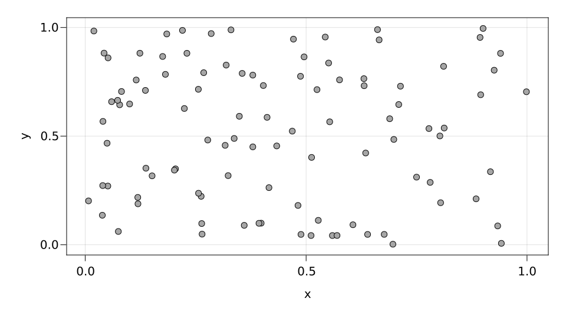
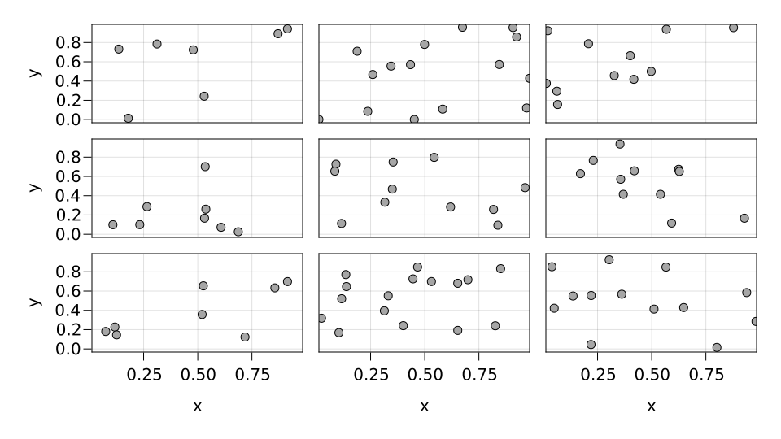
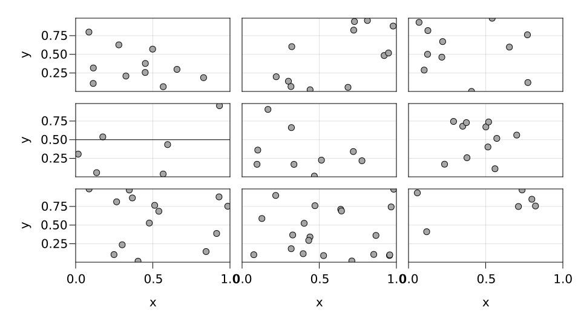

Example gallery
Semi-curated collection of examples.
Lines and markers
A simple scatter plot
using SplitApplyPlot, CairoMakie
df = (x=rand(100), y=rand(100))
fig = Figure()
specs = data(df) * mapping(:x, :y)
plot!(fig, specs)
display(fig)
A simple lines plot
x = range(-π, π, length=100)
y = sin.(x)
df = (; x, y)
fig = Figure()
specs = data(df) * mapping(:x, :y) * visual(Lines)
plot!(fig, specs)
display(fig)Lines and scatter combined plot
x = range(-π, π, length=100)
y = sin.(x)
df = (; x, y)
fig = Figure()
specs = data(df) * mapping(:x, :y) * (visual(Scatter) + visual(Lines))
plot!(fig, specs)
display(fig)x = range(-π, π, length=100)
y = sin.(x)
df1 = (; x, y)
df2 = (x=rand(10), y=rand(10))
fig = Figure()
m = mapping(:x, :y)
geoms = data(df) * visual(Lines) + data(df2) * visual(Scatter)
plot!(fig, m * geoms)
display(fig)Linear regression on a scatter plot
df = (x=rand(100), y=rand(100), z=rand(100))
fig = Figure()
m = data(df) * mapping(:x, :y)
geoms = linear() + visual(Scatter) * mapping(color=:z)
plot!(fig, m * geoms)
display(fig)Faceting
Still needs to automatically do things to axes, decorate, etc.
Facet grid
df = (x=rand(100), y=rand(100), i=rand(["a", "b", "c"], 100), j=rand(["d", "e", "f"], 100))
fig = Figure()
specs = data(df) * mapping(:x, :y, layout_x=:i, layout_y=:j)
ag = plot!(fig, specs)
hideinnerdecorations!(ag)
linkaxes!(ag...)
display(fig)
Facet wrap
df = (x=rand(100), y=rand(100), l=rand(["a", "b", "c", "d", "e", "f"], 100))
specs = data(df) * mapping(:x, :y, layout=:l) # FIXME: does not work..."Not yet implemented"
Adding traces to only some subplots
df1 = (x=rand(100), y=rand(100), i=rand(["a", "b", "c"], 100), j=rand(["d", "e", "f"], 100))
df2 = (x=[0, 1], y=[0.5, 0.5], i=fill("a", 2), j=fill("e", 2)) # FIXME: do we need a smarter way to pass layout?
fig = Figure()
m = mapping(:x, :y, layout_x=:i, layout_y=:j)
geoms = data(df1) * visual(Scatter) + data(df2) * visual(Lines)
ag = plot!(fig, m * geoms)
hideinnerdecorations!(ag)
linkaxes!(ag...)
display(fig)
Statistical analyses
Density plot
df = (x=randn(1000), c=rand(["a", "b"], 1000))
fig = Figure()
specs = data(df) * mapping(:x, color=:c) * SplitApplyPlot.density(bandwidth=0.5)
plot!(fig, specs)
display(fig)
df = (x=randn(1000), c=rand(["a", "b"], 1000))
fig = Figure()
specs = data(df) * mapping(:x, color=:c) * SplitApplyPlot.density(bandwidth=0.5) *
visual(orientation=:vertical)"Not yet supported"
This page was generated using Literate.jl.